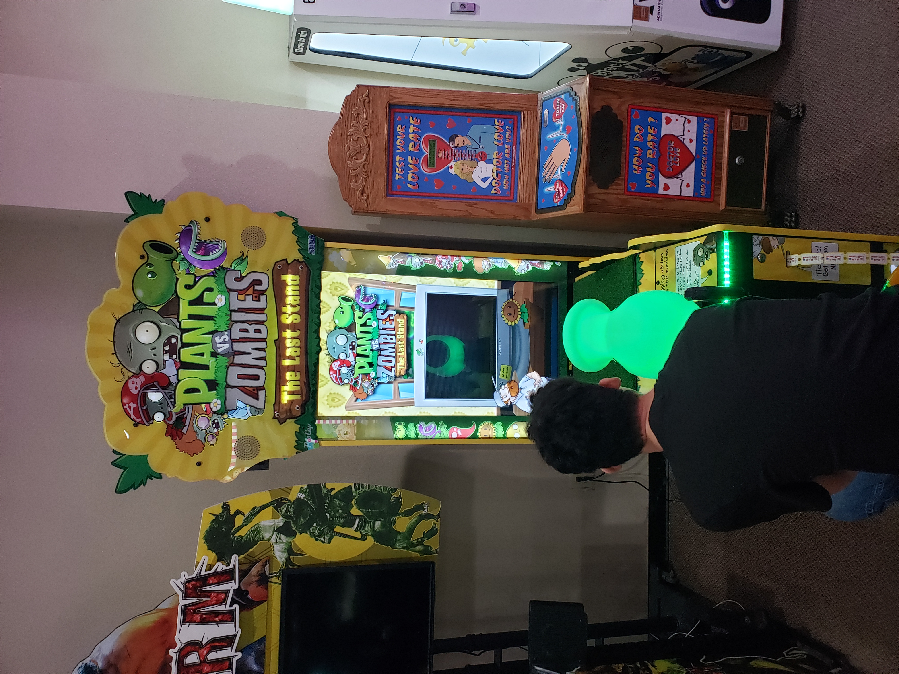
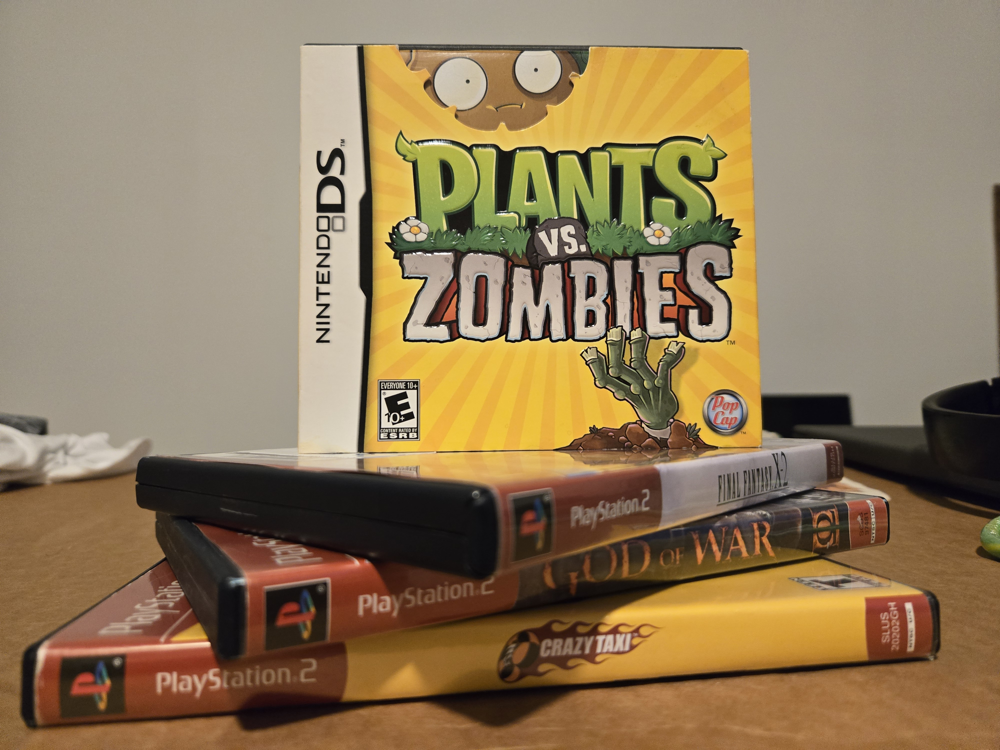

Placeholder opening self portrait. Replace before this goes live.
Here's some info about myself, where I've been and what I like. Just don't go in here looking for a weakness. I will know.
I've been to many places, seen some faces, and went through some contemplations. Here's a short highlight reel of what that was like.

a screenshot of a short film I completed last week. I take set design very seriously.
A local arcade I went to in Texas years ago. This PvZ arcade game recenty got uploaded and preserved on the internet.
A factory we passed through during one of our southern travels.
It's not copyright infringement if I link to someone else's rip instead of mine. Right?
And now, I shall combine what I observed and create an ordered list
using href
of tracks from games I like:
But there's no law that states a copy can't defeat the original.)
I like things. It's common to like things. It's just not often anyone asks about mine. Here's a few of them.
I learned how to add video files in here. Jood job making it this far.
Here's a haul of some games I bought from a local retro shop. It took me a while to learn how to resize this. I used style="width:50%"
for this one.
I love collecting retro video games, for I believe it's important to understand the past to appreciate how we got here. I'll also fancy a modern re-release with extra features. I fancy all kinds from platformers to fighters as you could probobly tell from the ubove visuals. I'm also known as the guy with the PS2 in his dorm.
You may 1v1 me on Friday nights at 8 PM at the lounge.
And that's all I found as of now. This may seem a little ahead, but I do find the various ways to edit these files very interesting.